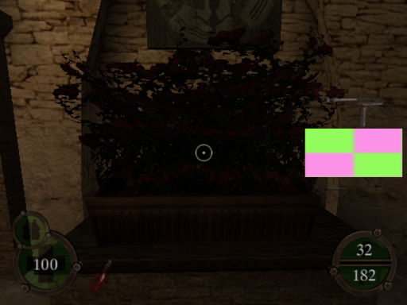

The codes are available in .pnach files for use with PCSX2 Emulator.
Cheat codes need to be renamed into (GAME_CRC).pnach. PCSX2 can read multiple .pnach files of the same CRC and with line added so you can have multiple .pnach's in the same game. To do it, simply add a line at the end (ex. CRC-something.pnach).
Guide for using PNACHIf you need the cheat codes in RAW format, simply do these steps:
1. Use "Find and Replace" to replace the lines "patch=1,EE," with "" (aka. NOTHING).
2. Repeat for the lines "//".
3. Replace the lines ",extended," with " " (aka. SPACEBAR).
If you want to convert the codes into format of your Cheat Device (Action Replay, Codebreaker, Gameshark, etc.), you will need the Omniconvert app.
If you wish to download the PNACH but it constantly opens as the text file, use the "Right Click > Save Link As ..." trick.
Modding tools that are used to make cheat codes or modding game files.
Usage will also be explained but it should be pretty simple. The actual instructions on how to use the programs can be found inside the files (manuals) or look online for tutorials.
If you wish to download the file but it constantly opens it as the text file, use the "Right Click > Save Link As ..." trick.
- Final Release (NTSC-U) = 5F4DB1DD.pnach
For real PS2 hardware.
Makes the game run at 60 FPS.
Gives extra ammo.
Gives extra weapons after passing one level. Other weapons which aren't usually available in the level will be invisible.
Makes loading screen be like in the PC version.
When a Treasure is collected, it adds up to Secrets instead. This makes Treasures be ZERO each time.
Get points from Treasures only.
Get points from both Secrets and Treasures and also write them both.
Premade files ( and updated ) with labels for use with PS2DIS.
Simply open the file inside PS2DIS and invoke analyzer or import it for the labels using "Import Labels from other file" option.
You can get the PS2DIS from HERE.